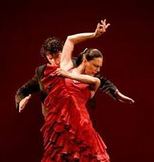
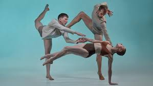

La Historia de la danza estudia la evolución de ésta a través del tiempo. Desde la prehistoria el ser humano ha tenido la necesidad de comunicarse corporalmente, con movimientos que expresaban sentimientos y estados de ánimo.
Hablar de la historia de la danza es remontarnos a los inicios de las tribus, eran grupos organizados que experimentaban asombro, temor, felicidad ante un rayo, la lluvia, el fuego….
Todo ello contribuyó para que organizaran y reconocieran la existencia de un ser, o de muchos seres superiores, a los que se les debían ofrecer cantos, bailes y donaciones. La danza fue una de las formas de manifestación que descubrieron para canalizar la tristeza, la alegría y el temor que afectaba al grupo. La danza era una forma de exteriorizar los sentimientos.
En principio, la danza tenía un componente ritual, se utilizaba en ceremonias de fecundidad, caza o guerra, o de diversa índole religiosa, donde la propia respiración y los latidos del corazón sirvieron para otorgar una primera cadencia a la danza.

Flamenco
El flamenco es un género musical español que se desarrolló en Andalucía, especialmente en las zonas de Cádiz y sus puertos, San Fernando, Jerez de la Frontera, Sevilla y los pueblos de su provincia como Lebrija y Utrera, Huelva, Granada y Córdoba así como en algunas áreas de la Región de Murcia, Castilla-La Mancha y Extremadura. Sus principales facetas son el cante, el toque, y el baile, contando también con sus propias tradiciones y normas.
Tal y como lo conocemos hoy en día, el flamenco data del siglo XVIII, y existe controversia sobre su origen, ya que aunque existen distintas opiniones y vertientes, ninguna de ellas ha podido ser comprobada de forma histórica. Aunque el diccionario de la RAE lo asocia a la cultura popular andaluza y a la notable presencia del pueblo gitano en aquella,3 es más que perceptible la fusión de las distintas culturas que coincidieron en la Andalucía de la época.
Aunque sí es cierto que los gitanos llegaron a España en el s. XV y a pesar de restricciones vitales y antigitanismo lograron asentarse en Andalucía alrededor del s. XVI-XVII, cuando inició el flamenco. Seguramente el bagaje cultural que el pueblo gitano arrastró desde su peregrinaje de la India fue a converger con los sonidos autóctonos andaluces, dando lugar al flamenco.
Vogue
Inspirada en el estilo de los jeroglíficos del Antiguo Egipto y las famosas poses de modelos de la revista Vogue, el voguing se caracteriza por movimientos que imitan a estas modelos integradas con posturas angulares, lineales y rígidos del brazo, la pierna y el cuerpo. Este estilo de baile surgió de los salones de baile de la cultura ball de Harlem donde se congregaban las drag queens afroamericanas de principios de la década de 1960 y su tradición de criticar ("throw shade") con un insulto sutil dirigido a otras reinas para impresionar a los jueces. Originalmente se llamaba "presentación" y luego "performance".
Con el paso de los años, la danza se convirtió en la forma más intrincada y acrobática que ahora se denomina "vogue". Los orígenes precisos del voguing están en disputa. Aunque muchos citan la historia en la que Paris Dupree sacó una revista Vogue e imitó la pose al compás de la música (y otras reinas posteriores), hay otros relatos que indican que este baile pudo haberse originado entre los reclusos gais negros de la Isla Rikers para la atención de otros hombres y la crítica ("shade"). El voguing se sigue desarrollando continuamente como una forma de baile establecida que se practica en la cultura ball LGBT y en los clubes de las principales ciudades de los Estados Unidos y en todo el mundo, principalmente Nueva York y París.

Contemporaneo
Su origen se remonta hasta finales del siglo XIX. En los inicios se buscaba una alternativa a la estricta técnica del ballet clásico, empezaron a aparecer bailarines danzando descalzos y realizando movimientos menos rígidos que los tradicionales en el escenario. Con el tiempo, fueron apareciendo variaciones en las que la técnica clásica brillaba por su ausencia e incluso se introducían movimientos de otras técnicas corporales, como el flamenco, movimientos de danzas tribales y hasta del yoga. Hasta el final de la Segunda Guerra Mundial, este renovado estilo de danza se llamó danza moderna, pero su evolución desde finales de los años 1940 en adelante llevó a que se prefiriese a partir de entonces emplear la expresión danza contemporánea.
Hoy en día, las técnicas modernas dejan paso a un torbellino de mezclas de estilos, llegándose incluso a no dejar claro a qué estilo se asemeja o qué patrones se siguen. Según Nieves Rosales, "Hoy parece que cualquiera es bailarín de contemporáneo, pero no todo vale".